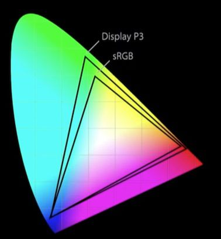

Work with Wider Color
https://developer.apple.com/videos/play/wwdc2016/712
Basic concepts about color
What is Color Space
A color space is a specific organization of colors. In combination with physical device profiling, it allows for reproducible representations of color, in both analog and digital representations. — Wiki

This is the standard RGB space, which is the default color space in iOS.
Color Primaries
Color primaries generally fall at the most intense value that you can get with that particular color channel.
Like, in sRGB space, the color primaries are
RGB {0.0, 0.0, 0.0} = Black
RGB {1.0, 1.0, 1.0} = White
RGB {1.0, 0.0, 0.0} = Red
Color gamut
All of the colors that can be defined as a combination of those individual color channels.
Display P3

In the above image, the colored region represents the outer limits of perception in a human’s color vision.
The inner black triangle represents sRGB’s limits of presentation.
In contrast, the DCI-P3 standard, and the Wide Color implementation, has a larger area underneath the triangle, representing the greater array of displayable color possible.
- 16bit per color channel for P3 and beyond
Extended Range sRGB
Wide color displays support a P3 color space, which can produce richer, more saturated colors than sRGB. As a result, photos and videos that use wide color are more lifelike, and visual data and status indicators that use wide color are more impactful.
Color Management
Application Content Types
- Static image resources
- Document and network image resources
- Advanced Media
- GPU Textures
Framing the Color Problem
- App Content can come in a broad range of color richness from many sources Devices and
- Displays come in a broad range of color capabilities
How do we bridge the differences?
The answer is color management.
The job of color management is to ensure that an image looks the same on any output device no matter what color space it is encoded in.
How does it work?
- Every image has an associated color space (color profile)
Color matching maps image colors to output device
Not for free: Every pixel needs to be color matched
- Potentially lossy: Color fidelity is lost when output has smaller gamut. For example, going down from P3 color space to sRGB color space.

Opti in System:
Color matching operations are easily hardware accelerated
Color matching operations are easily hardware accelerated
- Properly tagged content requires no code to display properly
Design Considerations for Wide Gamut
- Use wide gamut content where it makes sense
- Use where vivid colors enhance the user experience
- No need to change all content to P3
- Toolchain support makes gradual opt-in of wide gamut content possible
Upgrading Content to Wide Color
Be careful when promoting an existing design file to wide color!
- Don’t “assign” P3 profile. It just remaps the existing color information into new color space. The colors are stretched, and the design file will be inevitably altered.
- Convert to P3 instead
Tools

Color Specification
When communicating with designers, Be specific about color space!
Use Display P3 instead of sRGB when working with wide gamut designs
Use floating point for more precision
P3 (255, 128, 191)
P3 (1.0, 0.5, 0.75)
Drawing colors
Constructing Wide Gamut Colors
1 | NSColor(displayP3Red: 1.0, green: 0.0, blue: 0.0, alpha: 1.0) |
Constructing Extended Range sRGB Colors
1 | NSColor(red: 1.1, green: -.25, blue: 0.0, alpha: 1.0) |
Rendering
Optimizing your app’s drawing for wide gamut displays
❌ Don’t use UIGraphicsBeginImageContext. It doesn’t support wider color.
The format for the bitmap is a ARGB 32-bit
integer pixel format using host-byte order
UIGraphicsBeginImageContext not only cannot create contexts with more than 8 bits per color channel, but also cannot represent colors in extended range sRGB. Sadlly, existing interface has no ability to create a context in non-sRGB color space.
So, they introduce UIGraphicsImageRenderer(size: CGSize)
1 |
|
- Fully color managed by default
- Supports extended range sRGB color space
- Manages CGContext lifetime
Draw
UIView, UIImageView, Color managed since iOS 9.31
draw(_ rect: CGRect) // called in the extended sRGB color space
For UIView, use the view’s layer’s contentsFormat property
Valid CALayer contents formats:
- kCAContentsFormatRGBA8Uint
- kCAContentsFormatRGBA16Float
- kCAContentsFormatGray8Uint
scan qr code and share this article